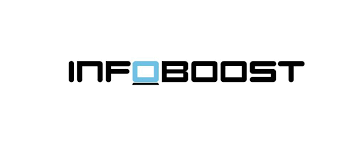

Stage de 1ère année
Stage de première année réalisé au sein de l'entreprise INFOBOOST, sur une durée de 8 semaines (du 21/04/2025 au 13/06/2025).
Ma mission principale était de refondre les deux sites WordPress de l’entreprise (BtoC et BtoB), en retravaillant leur design et leur architecture, tout en optimisant leur référencement (SEO).
Informations clés
Entreprise
INFOBOOST – services informatiques de proximité (vente/réparation, support & maintenance, accompagnement/formation)
Durée
du 21 avril au 13 juin 2025 (8 semaines)
Principales missions
web mastering WordPress (création/amélioration), optimisation SEO, création de supports (PDF/vidéo) et alimentation d'une base de connaissance